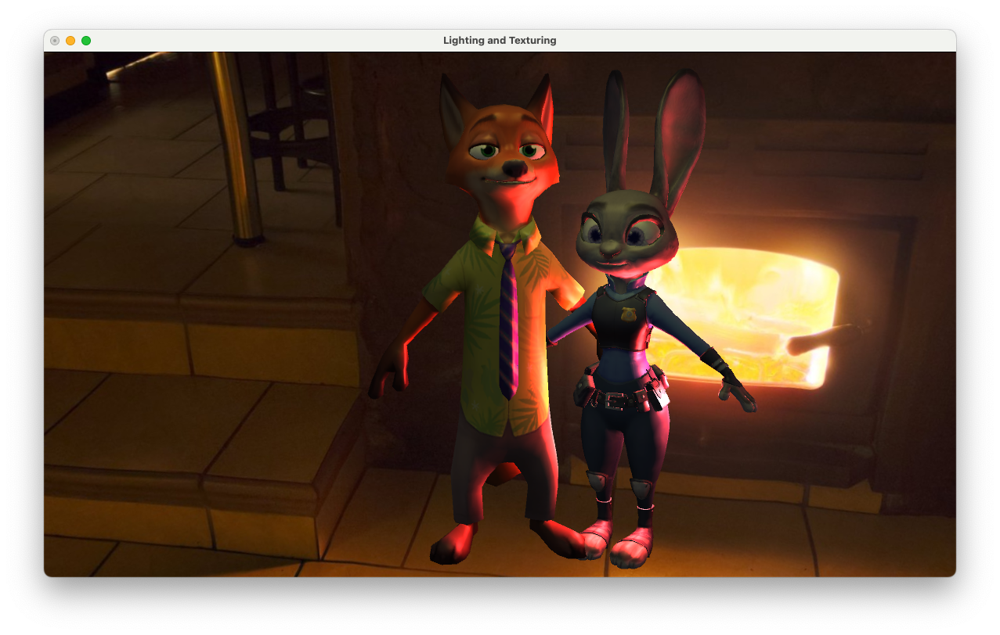
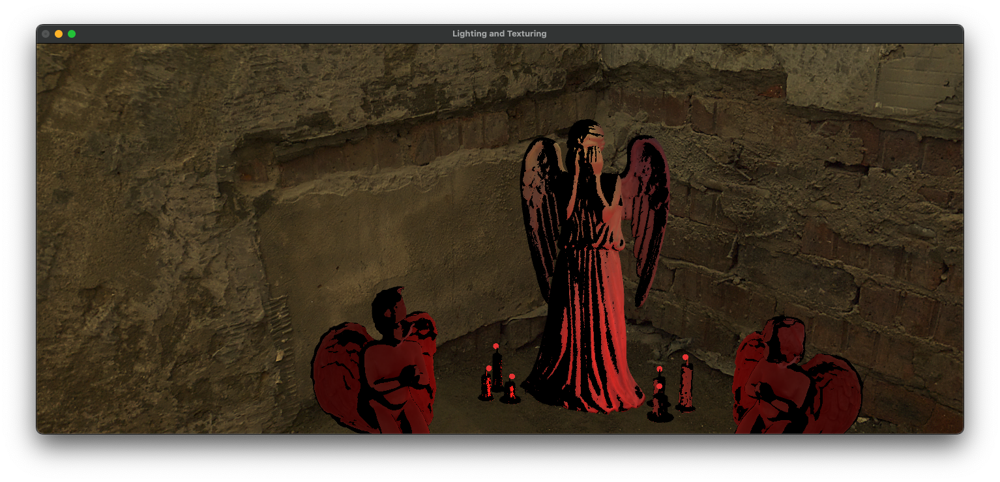

OBJ parsing
Reads v, vt, and vn records and triangulates polygon faces using a triangle fan.
Visual Computing · C++
A graphics system built progressively across four stages: loading geometry, organizing materials, implementing real-time lighting and textures, and composing complete rendered scenes.
Each stage extends the same renderer. The project moves from raw OBJ data to GPU-ready meshes, then adds material-aware shaders, physically motivated light behavior, textures, and final scene composition.
The first stage establishes the geometry pipeline. The loader parses OBJ positions, texture coordinates, normals, and polygon faces, then converts them into indexed triangle meshes that can be uploaded to the GPU.
Reads v, vt, and vn records and triangulates polygon faces using a triangle fan.
Deduplicates repeated position, UV, and normal tuples to build compact vertex and index arrays.
Creates a vertex buffer and index buffer, defines the vertex layout, and renders meshes with indexed drawing.
Supports dynamic model loading and deletion, normalization, and point, wireframe, or solid display modes.
The second stage extends the loader for multi-material models. OBJ material assignments become separate SubMeshes, allowing the renderer to draw different parts of one model with their own material parameters.
Reads usemtl assignments and MTL properties including Ka, Kd, Ks, and Ns.
Uses one shared vertex buffer for the model and a separate index buffer for each material-based SubMesh.
The vertex shader applies the model-view-projection transform while the fragment shader displays each material's diffuse color.
Model rotation and model switching make material boundaries and multi-part mesh construction easy to verify.
The third stage moves material and lighting calculations into the fragment shader. It combines Blinn-Phong shading, multiple light models, texture sampling, and an interactive skybox to evaluate the renderer under changing conditions.
Calculates diffuse and specular contributions per fragment for smoother, more responsive surface lighting.
Implements directional, point, and spot lights, with inverse-square attenuation for local lights.
Interpolates intensity between inner and outer cone angles for a controlled, soft spotlight edge.
Uses map_Kd textures when available, falls back to material diffuse color, and supports switchable skyboxes.

The final stage applies the complete pipeline to composed scenes. Geometry, material separation, textures, local lights, and environmental presentation work together to establish a distinct mood in each final render.

